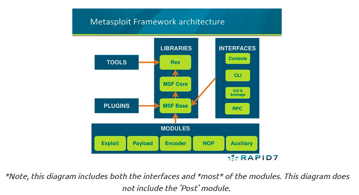

Task 4

• Using the show [all] command we can see what modules are available
Easily the most common module utilized, which module holds all of the exploit code we will use?
• exploit
Used hand in hand with exploits, which module contains the various bits of shellcode we send to have executed following exploitation?
• payload
Which module is most commonly used in scanning and verification machines are exploitable? This is not the same as the actual exploitation of course.
• auxiliary
One of the most common activities after exploitation is looting and pivoting. Which module provides these capabilities?
• post
Commonly utilized in payload obfuscation, which module allows us to modify the 'appearance' of our exploit such that we may avoid signature detection?
• encoder
Last but not least, which module is used with buffer overflow and ROP attacks?
• nop
Not every module is loaded in by default, what command can we use to load different modules?
• load